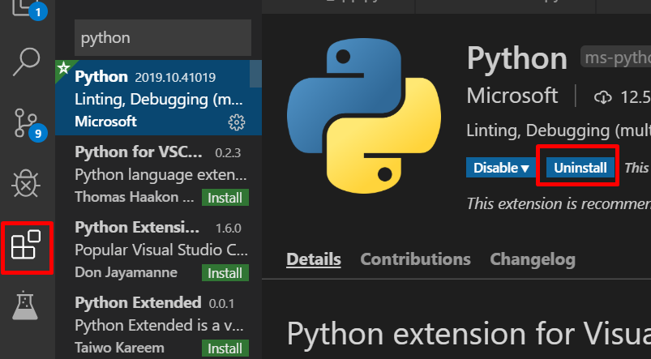
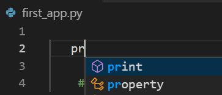
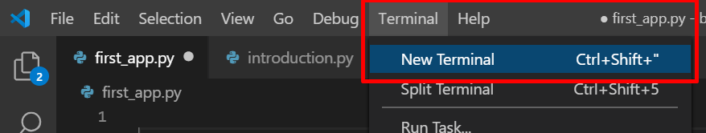
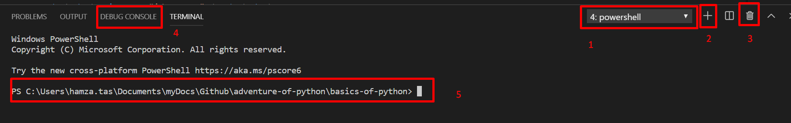

Visual Studio Code
Python öğrenirken kullanacağımız geliştirme ortamını tanıyalım.
20.10.2019
Buraya tıklayarak Visual Studio Code ' indirip kurabilirsiniz. Bu yazının amacı VS Code kurulumundan ziyade python kullanırken bu IDE'nin bize sunmuş olduğu bir kaç özelliği anlatmak olacaktır. Programı kurduktan python kodlarını daha anlamlı görünmesini sağlayan ve biz kod yazarken önerilerde bulunan bir eklentiyi eklemekte fayda var. Sol tarafta bulunan Extension Menüsünde "Python" olarak arama yaptığımızda karşımıza çıkan ilk ve en çok indirilen eklenyiyi kuruyoruz.

Bu eklentiden sonra biz python kodu yazdıktan VS Code bize önerilerde bulunacaktır. Örnek olarak aşağıdaki görselde print fonksiyonu için yazmaya başladığımda bana önerisini sunacaktır.

Bu ide üzerinde kullanacağımız bir diğer alanda Terminal kısmıdır. Burası komut satırı uygulamalarını çalıştırır.

VS Code üzerinde yeni bir Terminal penceresş açtığımızda aşağıdaki gibi bir ekran açılacaktır.

Burada numaralandırılmış alanların açıklaması aşağıdaki gibidir.
- Komut satırı uygulaması : powershell, cmd , python debug Console vs.
- Yeni bir komut satırı programı ekleme
- Komut satırı programını terminalden kaldırma
- Programımızı çalıştırdığımızda çıktısını göreceğimiz kısım
- Bulunduğumuz dizin veya komut çalıştırma dizini